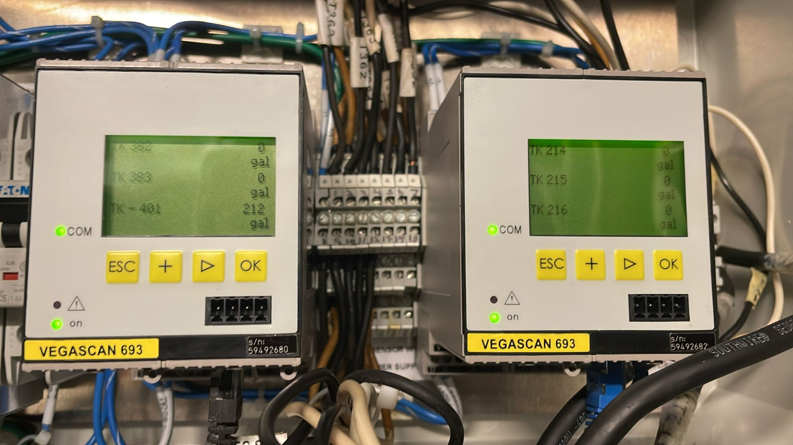
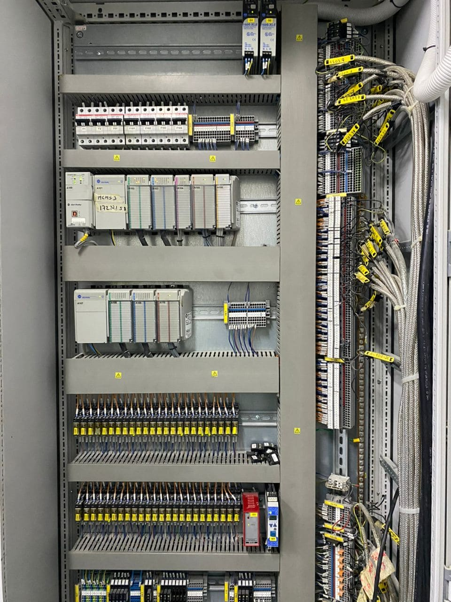
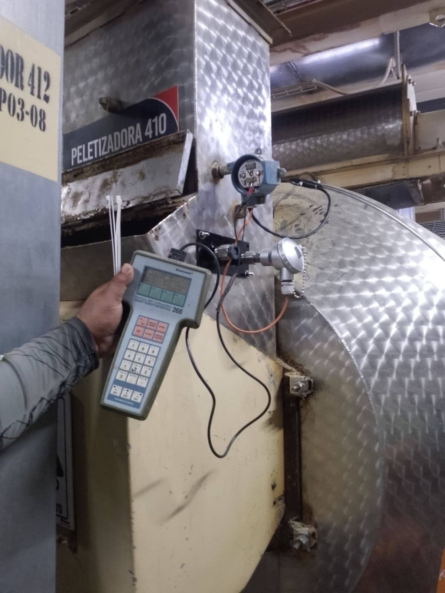

Continuidad operativa para infraestructura crítica
En SELEIM ofrecemos servicios especializados en instrumentación y control industrial orientados a garantizar la medición confiable de variables de proceso y la correcta operación de sistemas automatizados. Nuestro equipo cuenta con experiencia en instalación, calibración, configuración y diagnóstico de instrumentos utilizados en aplicaciones industriales de diversa complejidad.
Trabajamos con sensores, transmisores, termocuplas, RTD, instrumentos de nivel, flujo, presión y temperatura, integrando estas señales con PLC, HMI, variadores de velocidad y sistemas de supervisión para mejorar la eficiencia, seguridad y continuidad operativa de sus procesos.
Automatización confiable
Desarrollamos soluciones orientadas a la supervisión, control y optimización de procesos industriales mediante tecnologías modernas de automatización e integración de sistemas.
Servicios Especializados
- Calibración de instrumentos de proceso.
- Instalación de sensores y transmisores industriales.
- Diagnóstico de fallas en instrumentación y control.
- Integración de señales analógicas y digitales.
- Configuración y puesta en marcha de instrumentos inteligentes.
- Montaje de tableros de control e instrumentación.
- Verificación y ajuste de lazos de control.
- Mantenimiento preventivo y correctivo de sistemas de instrumentación.

Integración PLC, HMI y Sistemas de Control
Diseñamos e implementamos soluciones de automatización industrial mediante PLC, HMI y sistemas de supervisión, permitiendo centralizar información crítica, mejorar la toma de decisiones y optimizar el desempeño operativo de los procesos.
Realizamos programación, modificación y puesta en marcha de sistemas de control, así como integración de equipos de campo, comunicaciones industriales y visualización de datos para operadores y personal de mantenimiento.

Evaluación Técnica y Mejora de Procesos
Nuestro equipo realiza inspecciones técnicas orientadas a identificar desviaciones, fallas de medición, problemas de comunicación y errores de control que puedan afectar la calidad, productividad o seguridad de la operación.
Cada intervención incluye recomendaciones técnicas y documentación detallada para facilitar futuras actividades de mantenimiento y mejora continua de los sistemas automatizados.

¿Por qué elegir SELEIM?
Experiencia en Automatización
Integración de instrumentación, PLC, HMI y sistemas de supervisión.
Mediciones Confiables
Calibración y verificación de instrumentos para asegurar la precisión del proceso.
Documentación Técnica
Informes detallados con hallazgos, recomendaciones y evidencias.
Soluciones integrales
Desde la inspección inicial hasta la restitución operativa del sistema.
Solicite una evaluación técnica
Nuestro equipo está preparado para asistirle en la calibración, integración, automatización y optimización de sus sistemas de instrumentación y control.
Solicitar inspección